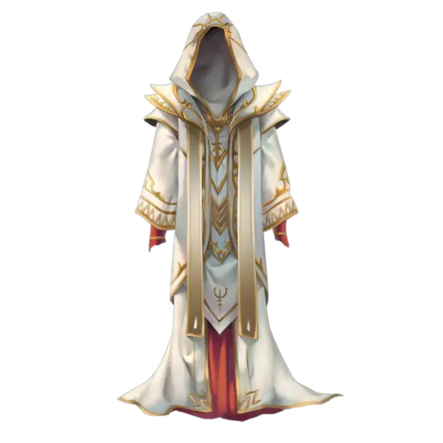

Мантия архимага
Robe of the Archmagi
Чудесный предмет, легендарный (требуется настройка Волшебником, Колдуном или Чародеем)

Рекомендованная стоимость от 50 001 зм
Этот красивый наряд пошит из белой, серой или чёрной ткани и украшен серебристыми рунами. Цвет мантии соответствует мировоззрению, для которого она и создана. Белые мантии делают для добрых, серые для нейтральных, а чёрные для злых. Вы не можете настроиться на мантию архимага, чьё мировоззрение не совпадает с вашим.
Вы получаете следующие преимущества, пока носите мантию:
- Если вы не носите доспех, ваш базовый Класс Доспеха равен 15 + ваш модификатор Ловкости.
- Вы совершаете с преимуществом спасброски от заклинаний и других магических эффектов.
- Сл спасбросков от ваших заклинаний и бонус атаки заклинаниями увеличиваются на 2.